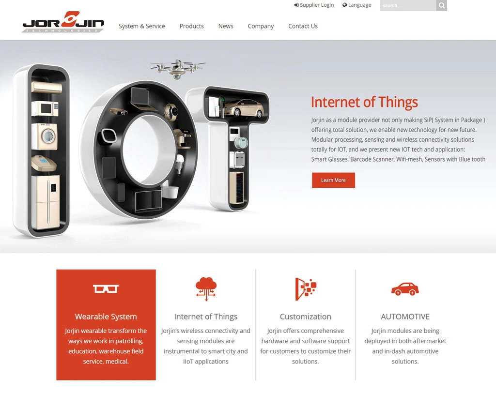
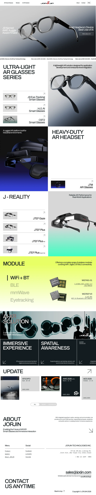

Jorjin 官網重構 Jorjin Corporate Website
UX 架構 × 視覺系統 × 前端開發 × 技術 SEO——為智慧眼鏡公司打造具有品牌個性的企業官網。 UX architecture × design system × frontend development × technical SEO — building a brand-distinctive corporate website for a smart glasses company.
SEO · Design System

Design Context
Jorjin 是一家以硬體為核心的智慧眼鏡公司，沒有專任前端工程師。過去官網以 WordPress 架設，受限於版型與外掛更新不易，大量產品資訊未經整理，使用者體驗零散。加入後主導對官網進行全面重構——重新梳理公司業務介紹，讓使用者體驗更流暢，並建立完整的 SEO 架構以提升關鍵字搜尋排名。
Jorjin is a hardware-first smart glasses company with no dedicated frontend engineer. The previous website ran on WordPress — constrained by template limitations and difficult plugin maintenance, leaving large volumes of product information disorganized and the user experience fragmented. After joining, I led a full website redesign: restructuring the company narrative, smoothing the user journey, and building a complete SEO foundation to improve organic search rankings.
Challenges
- 三條業務線的資訊整合：公司產品橫跨眼鏡代工（ODM）、模組販售，以及智慧眼鏡應用規劃三大類，如何在不拉長頁面篇幅的前提下讓使用者清楚理解公司全貌，是資訊架構上最核心的難題。
- 視覺品質的突破：公司工業設計能力強，想透過官網凸顯產品質感。智慧眼鏡作為新時代產品，邀請平面設計師加入共構視覺語言——對方負責產品渲染圖與影片素材，我負責系統規劃與前端實作，共同將整體視覺質感提升至新水準。
- Integrating three business lines: Jorjin's products span ODM glasses manufacturing, module sales, and smart glasses application planning. The core challenge was presenting the company's full scope without overloading visitors — helping them quickly grasp what Jorjin does and explore the relevant business line.
- Raising visual quality: Jorjin's industrial design capability is strong, and the website needed to reflect that. I brought in a visual designer to collaborate — they handled product renders and video assets, while I managed design system planning and frontend implementation, together elevating the overall visual quality to a new level.
What I Did
- 規劃整體網站 UX 架構與資訊分類，定義三條業務線的內容層級
- 建立 Design System，統一視覺規範與元件庫
- 負責全站前端開發（Next.js，RWD 手工規劃）
- 規劃並執行技術 SEO：動態 Sitemap、hreflang 雙語設定、Metadata 管理、Search Console 持續追蹤
- Planned overall UX architecture and information hierarchy, defining content priorities across three business lines
- Built a Design System to unify visual language and component specifications
- Led full-site frontend development in Next.js, with manually crafted responsive layouts
- Planned and implemented technical SEO: dynamic Sitemap, bilingual hreflang, metadata management, and Search Console iteration
Design Process
重構範疇涵蓋資訊架構、視覺系統、元件庫與前端實作，由我主導規劃，並與視覺設計師深度協作完成。
The redesign covered information architecture, visual system, component library, and frontend implementation — planned and led by me, with deep collaboration with a visual designer.
訪談為先，以 ODM 為主軸定義資訊層級
Interviews first — information hierarchy built around the ODM model
重構前先對內部同仁進行簡易訪談，了解各部門希望對外呈現的重點；並與業務及各部門主管進行深入訪談，釐清公司產品的核心優勢與溝通優先順序。
Before redesigning, I conducted lightweight interviews with internal team members to understand what each department wanted to communicate externally, then held in-depth interviews with sales and management to clarify core product strengths and communication priorities.
根據訪談結果，以「智慧眼鏡整機」為入口，以眼鏡代工（ODM）為主軸規劃整體架構，再延伸至核心模組販售與 AR 落地應用場域——讓使用者一進站就能快速理解公司是做什麼的，再依自身需求深入了解對應的業務線。
Based on interview findings, I structured the site with "complete smart glasses" as the entry point, ODM manufacturing as the central axis, and extended outward to core module sales and AR application use cases — letting visitors quickly understand what Jorjin does, then explore the relevant business line at their own pace.
- ODM / OEM：眼鏡整機代工，公司核心業務，作為網站資訊主軸
- Module：眼鏡核心模組，面向系統整合商
- Solution / Application：AR 落地應用規劃，面向企業終端客戶
- ODM / OEM: Full glasses manufacturing — the company's core business and the primary axis of the site
- Module: Core optical modules, targeting system integrators
- Solution / Application: AR deployment planning, targeting enterprise end-users
設計先行，不用模板——從設計師排版特色歸納整套視覺語言
Design-led, no templates — a visual language derived from the designer's layout style
以「設計先行」為原則，不使用現成模板，從視覺設計師的排版特色出發，歸納並建立整套 Design System，確保視覺語言的獨特性。
Following a "design-first" principle, I avoided ready-made templates. Starting from the visual designer's layout style, I synthesized a complete Design System to preserve the site's distinctive visual identity.
- 色彩：深色底、高質感科技風，搭配高對比強調色，凸顯產品形象。
- 字型排版：標題保持緊湊（tight letter-spacing），分別規範標題、內文、標籤的行高與字間距，形成明確層級對比。
- 元件規範：Button 統一樣式，完整定義 Normal / Hover / Selected 三種狀態；其他互動元件同步規範狀態一致性。
- 響應式：全站 RWD 以手工規劃為主，不使用自動縮放框架，確保每個斷點的排版質感都經過設計判斷，而非機械壓縮。
- Color: Dark background, premium tech aesthetic with high-contrast accent colors to emphasize product presence.
- Typography: Tight letter-spacing on headings, with clearly defined line-height and tracking for headings, body, and labels — creating strong visual hierarchy.
- Component spec: Unified button styles with fully defined Normal / Hover / Selected states; all interactive components follow consistent state rules.
- Responsive: All breakpoints manually planned — no auto-scaling frameworks — ensuring every layout decision was intentional, not mechanically compressed.
Design System 由我與視覺設計師共用，確保他交付的產品渲染圖與影片素材能直接套入版型而無需再調整，整體目標是盡可能放大產品視覺優勢，讓使用者留下深刻印象。
The Design System was shared with the visual designer, ensuring product renders and video assets could be placed directly into the layout without adjustment. The goal: maximize the visual impact of the product and leave a lasting impression on visitors.


技術 SEO 建置 × Search Console 持續迭代，不依賴關鍵字工具
Technical SEO setup × Search Console iteration — no keyword research tools needed
SEO 工作以技術面建置為基礎，搭配 Google Search Console 數據持續迭代，不依賴關鍵字研究工具。
The SEO work was grounded in technical foundation, continuously iterated using Google Search Console data — without relying on keyword research tools.
- 動態 Sitemap：以 Next.js 自動生成 Sitemap，涵蓋所有
/products/[slug]與/modules/[slug]頁面——新增產品時 Sitemap 自動更新，無需手動維護。 - 雙語 hreflang：英文版（
/）與繁中版（/zh）皆設定正確的hreflangalternates，讓 Google 依使用者語系提供對應版本。 - Metadata 管理：每頁獨立設定
<title>與<meta description>，確保描述精準、各頁不重複。 - Search Console 追蹤：提交 Sitemap、修正收錄錯誤，並定期依曝光數、CTR、排名數據調整頁面文案與內部連結。
- Dynamic Sitemap: Auto-generated via Next.js, covering all
/products/[slug]and/modules/[slug]pages — new products are indexed automatically without manual updates. - Bilingual hreflang: English (
/) and Traditional Chinese (/zh) versions correctly configured withhreflangalternates, letting Google serve the appropriate version by user locale. - Metadata management: Each page has its own
<title>and<meta description>, with precise, non-duplicated descriptions. - Search Console monitoring: Submitted Sitemap, corrected indexing errors, and regularly adjusted page copy and internal linking based on impressions, CTR, and ranking data.
Results
比較區間：舊版基準期（2025/3–11）vs. 新版穩定期（2026/1–6），數據來源：Google Search Console。
Comparison period: Pre-redesign baseline (Mar–Nov 2025) vs. post-redesign stable phase (Jan–Jun 2026). Source: Google Search Console.
從搜尋結果第 2 頁後段躍升至第 1 頁前段，技術 SEO 架構重整後 Google 對頁面的相關性評估大幅提升。比較區間：2025/3–11 vs. 2026/1/16–6/22。
Jumped from the bottom of page 2 to the top of page 1 in search results. After restructuring the technical SEO architecture, Google's relevance assessment for the pages improved dramatically. Comparison: Mar–Nov 2025 vs. Jan 16–Jun 22, 2026.
新版 title tag 與 meta description 對搜尋者更具說服力——使用者更傾向在搜尋結果中選擇點擊 Jorjin。
The new title tags and meta descriptions proved more compelling to searchers — users became more likely to choose Jorjin from search results.
Next.js 動態 Sitemap 在新產品上架時自動更新，/products/hj1、/products/j9、/products/c9t2 等 8 個新頁面均於上線後獲得索引與流量。雙語首頁（/zh）亦獨立獲得搜尋流量，驗證 hreflang 設定有效。
The Next.js dynamic Sitemap auto-updates when new products are published. All 8 new pages — including /products/hj1, /products/j9, /products/c9t2 — were indexed and received organic traffic after launch. The bilingual homepage (/zh) also gained independent search traffic, confirming correct hreflang configuration.
Reflection
這個專案最有成就感的部分，是「設計先行」的堅持。隨著 AI 工具與架站平台快速發展，大量網站開始趨向相似的版型與視覺語言。在規劃 Jorjin 官網時，我刻意抵抗這個慣性——選擇與視覺設計師深入溝通，讓他以「平面輸出品」的思維發想畫面，而非以網站常見的模組邏輯出發。在主要互動流程確立後，整體視覺以設計稿為主導；前端實作則盡可能忠實還原，不為技術方便而妥協視覺細節。最終做出一個在易用性與視覺質感上都有明確個性的網站——對一間以硬體設計為核心的公司而言，這是對的選擇。
The most rewarding part of this project was holding to the "design-first" principle. As AI tools and website builders proliferate, many sites are converging toward the same templates and visual language. When planning Jorjin's website, I deliberately resisted that pull — working closely with a visual designer and letting the design lead. After establishing the main interaction flows, the visual design drove everything; the frontend implementation followed faithfully, never compromising visual details for technical convenience. The result is a website with a clear identity in both usability and aesthetic — the right choice for a company whose core competency is hardware design.
Key Takeaways
- 設計先行、前端忠實還原——不讓工具框架決定設計樣貌
- AI 工具盛行的時代，「有特色」本身就是差異化
- 設計師與視覺設計師的深度協作，是突破網站版型同質化的關鍵
- 擁有前端能力讓設計決策可以直接落地，減少溝通與妥協的損耗
- Design-first, faithfully implemented — never let tooling dictate visual decisions
- In the age of AI tools, distinctiveness itself is a competitive advantage
- Deep collaboration between UX and visual design is key to breaking through template homogenization
- Frontend capability lets design decisions land directly — reducing communication overhead and compromise